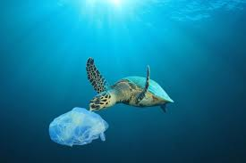
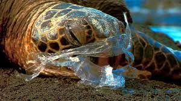

Threats to Turtles
Worldwide, six of the seven sea turtle species are classified as threatened or endangered due to human actions and lifestyles. From getting caught in fishing gear to people eating their meat and eggs, there are lots of ways that these animals are affected by people.

According to the World Conservation Union, there are five main underlying reasons for the unexpected demise of the sea turtle
- The fisheries present across the globe are the reasons why the seaturtle hatcheries are being adversely affected. The consequence of the presence of such fisheries at the hatching sites of these sea turtles has to lead to their death due to entanglement, destruction of their habitat, and sudden changes in their food web.
- It is a common scenario where the sea turtles and their eggs are often killed by people. This is usually done in the benefit of mankind for oil, shells, and leather production.
- The coastal development process often results in the destruction of all the habitats of these sea turtles. These may include the alterations introduced both at the shoreline and at the sea-shore.
- The presence of plastics, petroleum by-products, debris, and discarded fishing gears often results in their bioaccumulation within the sea turtle species.
- The several different climatic changes result in alteration of the nesting processes at the nesting sites. This may be related to the modifications introduced in the habitats of the sea turtle or due to the transformations of the basic oceanographic processes.


- Home
- Turtle Categories
- Kosgoda
- Hikkaduwa
- Benthota
- Threats To Turtles
- Purchase and donate
- Donation Form
© Turtle Kingdom. All Rights Reserved.